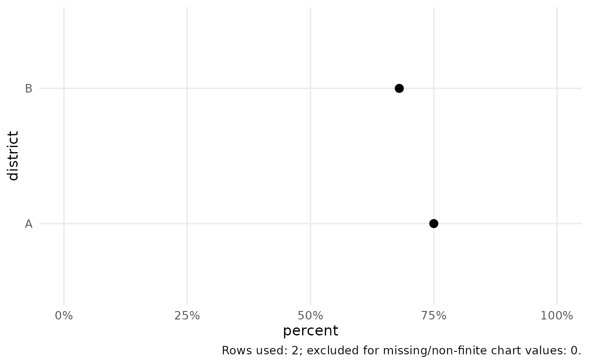

Returns an editable ggplot object. Bar charts count rows when y is NULL;
supplying y uses already summarised values and requires unique chart
keys. Lines also require one value per x/group/facet. Charts omit rows
missing a required measurement and report that count in the caption.
Missing categories in comparison charts are labelled explicitly.
Usage
cata_plot(
data,
type = "bar",
x,
y = NULL,
group = NULL,
facet = NULL,
value = NULL,
yend = NULL,
lower = NULL,
upper = NULL,
title = NULL,
subtitle = NULL,
caption = NULL,
xlab = NULL,
ylab = NULL,
sort = FALSE,
percent = FALSE,
bins = 10,
style = "cata",
log_scale = FALSE,
reference = 1
)Arguments
- data
A data frame.
- type
Chart type: bar, histogram, density, line, scatter, box, dot, heatmap, dumbbell, forest, or cascade.
- x, y
Names of axis variables.
yis optional only for a count bar, histogram, or density plot. For a forest plot, x contains term labels.- group, facet
Optional grouping and faceting variable names.
- value
Numeric fill variable for a heatmap.
- yend
Second numeric value for a dumbbell chart.
- lower, upper
Numeric confidence-limit columns for a forest plot.
- title, subtitle, caption
Plot text.
- xlab, ylab
Optional axis labels, including units where appropriate.
- sort
Sort a single-series bar/dot/dumbbell by its value.
- percent
Whether values are percentages on a 0 to 100 scale.
- bins
Number of histogram bins.
- style
Built-in
"cata"or optional"dsi"theme.- log_scale
Use a logarithmic estimate axis for a forest plot.
- reference
Reference value for a forest plot (1 for an odds ratio).
Examples
d <- data.frame(district = c("A", "B"), percent = c(75, 68))
cata_plot(d, "dot", "district", "percent", percent = TRUE)
